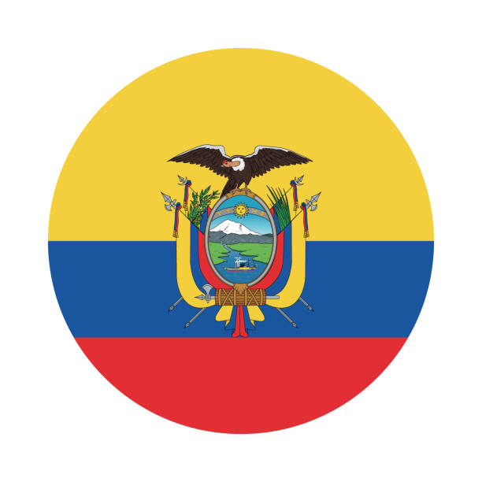

Aarón Gutiérrez
About me
My name is Aarón Gutiérrez. I was born and raised in Guayaquil, a city in Ecuador. I like videogames and I enjoy learning about web development.
Guayas, Ecuador

Ecuador is the only country in the world named after a geographical feature—the equator, which runs through it. Its official name is "República del Ecuador". Due to the Earth's bulge at the equator, the summit of Mount Chimborazo in Ecuador is the closest point on Earth to outer space, despite being shorter in elevation than Mount Everest!